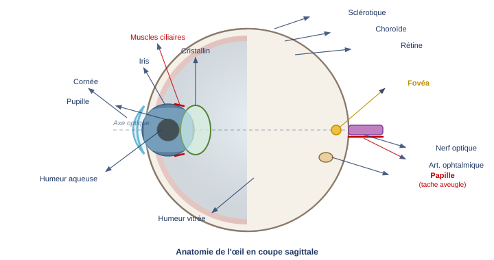
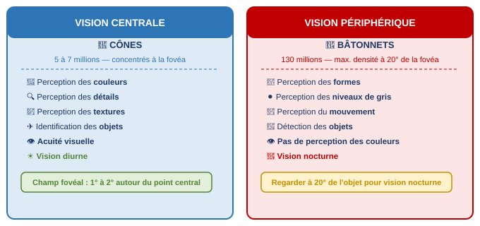
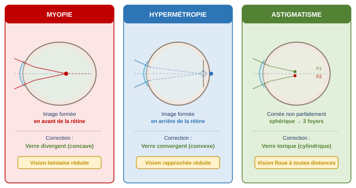
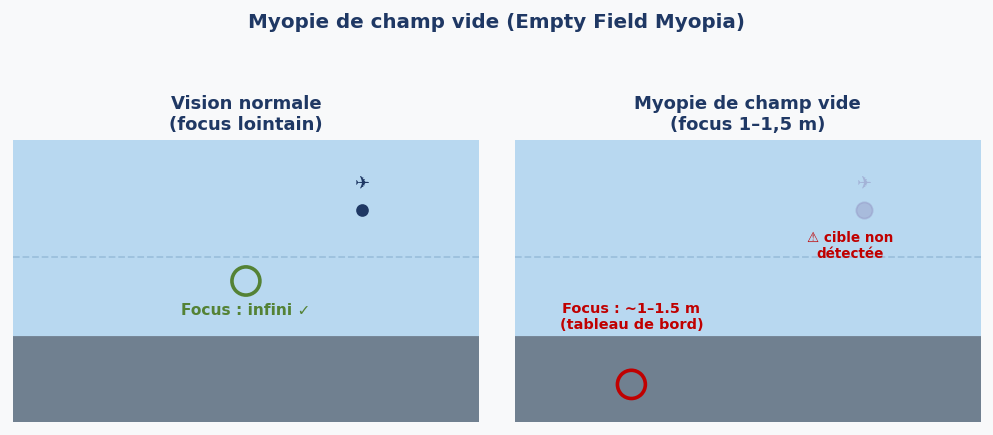
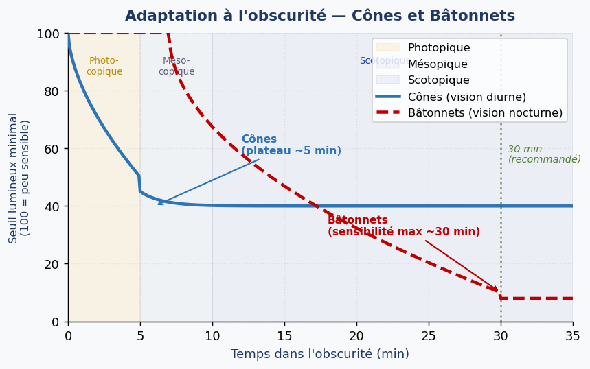

1. Introduction — La Vision comme Fonction Sensorielle
La vision est une fonction sensorielle complexe qui implique deux éléments distincts : le capteur (l'œil), qui collecte les informations lumineuses, et l'organe de traitement (le cerveau), qui interprète ces signaux pour construire une représentation mentale du monde. Cette distinction est fondamentale pour comprendre pourquoi l'environnement aéronautique peut générer de graves erreurs de perception visuelle.
En aviation, les conditions particulières — faible luminosité, absence de repères, vibrations, fatigue, hypoxie — peuvent perturber autant le capteur que le système de traitement. Comprendre ces mécanismes est indispensable pour anticiper les pièges liés à la vision en vol.
2. Anatomie de l'Œil
L'œil est souvent comparé à un appareil photo : il possède un diaphragme (iris), une ouverture (pupille), un objectif (cristallin) et une pellicule (rétine). Mais contrairement à une caméra, l'œil est un système vivant, adaptatif et imparfait.

2.1 Structures externes et de protection
La sclérotique (le blanc de l'œil) est l'enveloppe protectrice résistante de l'œil. La cornée est la partie antérieure transparente de la sclérotique, ouverte vers l'avant, qui constitue le premier élément réfractant de l'œil (environ 70 % du pouvoir de réfraction total). La choroïde est une membrane interne richement vascularisée qui joue le rôle de chambre noire, absorbant les rayons lumineux parasites.
2.2 Structures optiques
L'iris est la partie colorée de l'œil, formant un diaphragme dont l'ouverture centrale — la pupille — régule mécaniquement la quantité de lumière entrant dans l'œil. Le diamètre pupillaire varie de 2 à 8 mm selon l'intensité lumineuse.
Le cristallin est une lentille biconvexe transparente à convergence variable, contrôlée par les muscles ciliaires. C'est l'organe de l'accommodation : en se déformant, il ajuste la mise au point sur des objets à différentes distances, comme l'autofocus d'une caméra.
L'humeur aqueuse est un liquide transparent situé entre la cornée et le cristallin (chambre antérieure), assurant la nutrition des structures avasculaires. L'humeur vitrée (ou corps vitré) est une substance gélatineuse transparente occupant la chambre postérieure de l'œil, entre le cristallin et la rétine.
2.3 Structures nerveuses et vasculaires
Le nerf optique collecte les influx nerveux générés par la rétine et les transmet au cortex visuel (cerveau). L'artère ophtalmique irrigue l'œil. La papille optique (ou papilla) est le point d'émergence commun du nerf optique et des vaisseaux sur la rétine. Cette zone ne contient aucun photorécepteur : elle constitue donc la tache aveugle (blind spot), invisible en vision binoculaire normale mais pouvant masquer un objet lors d'une vision monoculaire.
3. Accommodation et Adaptation
3.1 Accommodation
L'accommodation est la capacité de l'œil à modifier sa vergence pour focaliser nettement les objets à différentes distances. Elle est assurée par la déformation du cristallin sous l'action des muscles ciliaires : pour la vision de près, le cristallin se bombe (augmentation de convergence) ; pour la vision de loin, il s'aplatit.
Organe : cristallin + muscles ciliaires. Permet la mise au point de l'infini jusqu'à quelques centimètres.
3.2 Adaptation
L'adaptation est un mécanisme à deux niveaux permettant à l'œil de fonctionner sur une plage de luminosité extrêmement large (de la lumière solaire à la nuit étoilée, soit environ 10 ordres de grandeur).
Le mécanisme mécanique repose sur le réflexe pupillaire : la contraction ou la dilatation de l'iris modifie la quantité de lumière entrant dans l'œil. Ce processus est rapide (secondes) mais limité en amplitude (rapport 16:1 entre pupille dilatée et contractée).
Le mécanisme neurophysiologique implique les photorécepteurs eux-mêmes : en forte lumière, les pigments photosensibles des cônes et bâtonnets se "blanchissent" (réduction de la sensibilité) ; dans l'obscurité, ils se "régénèrent" progressivement (augmentation de la sensibilité). Ce processus est beaucoup plus lent — jusqu'à 30 minutes pour une adaptation complète à l'obscurité.
4. Vision Binoculaire et Estimation des Distances
La vision binoculaire est le principal mécanisme de perception des distances à courte portée. Comme les deux yeux sont espacés d'environ 6,5 cm, ils perçoivent des images légèrement différentes (disparité binoculaire). Le cerveau analyse cette différence pour calculer la distance relative ou absolue des objets.
En aviation, cette limite est critique : lors de l'approche finale, à moins de 100 m de la piste, la vision binoculaire reprend le relais et peut détecter des anomalies que la perspective seule ne révèle pas. En vol de croisière à haute altitude, seule la perspective est disponible, ce qui peut créer des illusions d'altitude ou de distance.
5. La Rétine — Cônes et Bâtonnets
La rétine est une fine membrane tapissant la face interne du globe oculaire, contenant environ 130 millions de photorécepteurs répartis en deux types fondamentalement différents.

5.1 Les Cônes — Vision Centrale et Diurne
Les cônes (5 à 7 millions) sont concentrés dans la région centrale de la rétine, notamment à la fovéa. Il en existe trois types, encodant les trois couleurs primaires : rouge, vert et bleu. Leur combinaison permet la perception de toutes les nuances du spectre visible. Les cônes nécessitent une bonne luminosité pour fonctionner : ce sont les photorécepteurs de la vision photopique (diurne).
La fovéa est une dépression centrale de la rétine, pauvre en bâtonnets et richement dotée en cônes, correspondant au point de vision maximale. Elle ne couvre qu'un angle de 1 à 2° autour du point central de regard. C'est elle qui assure l'acuité visuelle.
5.2 Les Bâtonnets — Vision Périphérique et Nocturne
Les bâtonnets (130 millions) sont répartis sur toute la rétine périphérique, avec une densité maximale à environ 20° de la fovéa. Ils ne distinguent pas les couleurs (perception en niveaux de gris uniquement) mais sont extrêmement sensibles à la lumière. Ce sont les photorécepteurs de la vision scotopique (nocturne). Ils sont spécialisés dans la détection des formes, des mouvements et des objets peu lumineux.
5.3 Vision des Couleurs et Dyschromatopsie
La perception des couleurs dépend de la luminance de l'objet : en dessous d'un seuil chromatique (intervalle photochromatique), les cônes ne peuvent plus distinguer les couleurs et la vision devient achromatique. C'est le phénomène de transition entre vision photopique et scotopique (vision mésopique).
La dyschromatopsie (déficit de perception des couleurs) affecte environ 8 % des hommes. Elle est détectée par le test d'Ishihara (planches de points colorés dissimulant des chiffres). En aviation, ce déficit peut être éliminatoire selon le niveau de la licence (ATPL) car les feux d'aérodrome et les signaux lumineux utilisent des codes couleur (rouge, vert, blanc).
6. Acuité Visuelle et ses Troubles
6.1 Définition et Standards Réglementaires
L'acuité visuelle est le pouvoir séparateur de l'œil — la capacité à distinguer deux points ou détails séparés par une distance angulaire minimale. Elle est mesurée à la fovéa (vision centrale). L'acuité de 10/10 signifie que l'œil peut résoudre un angle d'une minute d'arc (1').
Avec ou sans correction optique (lunettes ou lentilles). Le pilote avec amétropie doit emporter des lunettes de secours en cabine.
6.2 Facteurs Limitant l'Acuité Visuelle
En pratique, l'acuité est limitée par de nombreux facteurs physiologiques et environnementaux. Les principaux sont la distance angulaire par rapport à la fovéa, les imperfections du système optique (amétropies), l'âge, l'hypoxie (dès FL100 sans masque), le tabagisme et l'alcool, la visibilité atmosphérique, la quantité de lumière disponible, la taille et le contraste de l'objet, son éloignement, son mouvement relatif et les médicaments.
6.3 Les Amétropies — Troubles de la Réfraction
L'emmétrope est l'œil de puissance optique normale : l'image d'un objet lointain se forme exactement sur la rétine sans effort d'accommodation. Toute déviation de cette norme constitue une amétropie : l'image ne se forme pas sur la rétine.

La myopie résulte d'un globe oculaire trop long ou d'une cornée trop courbée : l'image se forme en avant de la rétine. La vision de loin est floue ; la vision de près est conservée. Correction : verre divergent (concave, à bords épais).
L'hypermétropie résulte d'un globe oculaire trop court : l'image se formerait en arrière de la rétine. La vision de près est affectée en priorité, puis la vision de loin en cas d'hypermétropie forte. Correction : verre convergent (convexe, à centre épais).
L'astigmatisme résulte d'une cornée non parfaitement sphérique, ce qui crée deux foyers distincts. La vision est floue à toutes les distances (lignes horizontales et verticales ne peuvent être nettes simultanément). Correction : verre torique (cylindrique).
La presbytie est une perte progressive du pouvoir d'accommodation liée à la rigidification du cristallin avec l'âge, généralement à partir de 45 ans. La vision de près devient difficile. Correction : verres bifocaux, trifocaux ou progressifs.
6.4 Myopie de Champ Vide (Empty Field Myopia)
En l'absence de toute cible sur laquelle l'œil peut se focaliser (ciel clair sans nuages, nuit noire, brouillard uniforme), le cristallin adopte spontanément un point de repos correspondant à une distance de 1 à 1,5 mètre — c'est la myopie de champ vide. L'œil n'est donc pas focalisé à l'infini alors que le pilote croit regarder dehors.

Ce phénomène est particulièrement dangereux pour la détection des aéronefs adverses ou des conflits de trafic. Les conditions favorisantes incluent les cieux sans nuages à haute altitude, l'obscurité totale, un ciel uniformément couvert, et le repos oculaire (regarder sans fixer).
7. Corrections Optiques et Contraintes en Aviation
Les amétropies se corrigent par des aides optiques appropriées. Le principe de la correction est simple : ajouter devant l'œil une lentille dont la puissance compense le défaut de focalisation du système oculaire.
Tout pilote amétrope doit disposer en cabine de lunettes de secours en cas de perte ou de détérioration de sa correction habituelle. Cette obligation réglementaire s'applique que le pilote utilise des lunettes ou des lentilles de contact.
7.1 Lunettes de Soleil
Les lunettes de soleil doivent être de bonne qualité optique. Trois types sont à éviter ou utiliser avec précaution en vol.
Les verres polarisants doivent être évités en aviation : utilisés avec les pare-brises feuilletés des aéronefs, ils peuvent créer des interférences optiques et produire des motifs colorés gênants (effet moiré). Ils masquent également les reflets de surface utiles pour la détection VFR des plans d'eau et des autres aéronefs.
Les verres photochromiques (teintés selon la luminosité) sont généralement déconseillés en vol car leur décoloration est lente (plusieurs minutes) lorsque le pilote passe de l'extérieur lumineux à un poste de pilotage plus sombre. Cette période de transition crée une dégradation temporaire de la vision.
Les verres jaunes augmentent le contraste mais réduisent la luminosité transmise, ce qui n'est pas souhaitable dans toutes les conditions.
7.2 Lentilles de Contact
Les lentilles offrent une correction optique satisfaisante pour toutes les amétropies sauf la presbytie (lentilles progressives peu adaptées à l'environnement cockpit). Le principal inconvénient en aviation est la sécheresse de l'air pressurisé et climatisé des cabines : l'air sec assèche la cornée, provoquant un inconfort, un flou visuel transitoire et un risque d'irritation. L'utilisation de larmes artificielles est recommandée lors des vols prolongés.
7.3 Chirurgie Réfractive
La chirurgie réfractive (LASIK, PKR) vise à modifier la courbure de la cornée pour corriger l'amétropie. Les résultats sont généralement excellents mais la cornée est fragilisée par l'intervention, notamment vis-à-vis des traumatismes. L'aptitude médicale après chirurgie réfractive est accordée au cas par cas selon les autorités médicales EASA, avec une période d'exclusion post-opératoire.
8. Adaptation à la Lumière et à l'Obscurité
8.1 Adaptation à la Lumière
Lors d'une exposition soudaine à une forte luminosité, l'œil s'adapte rapidement en environ 10 secondes grâce au réflexe pupillaire (constriction de la pupille). Simultanément, les photorécepteurs réduisent leur sensibilité par "blanchiment" des pigments photosensibles. Toutefois, si une forte lumière a été subie pendant une longue période, une proportion importante des pigments des cônes et bâtonnets est dégradée, réduisant durablement la sensibilité.
L'éblouissement (glare) est parfois inévitable (soleil, éclairements de piste) et peut temporairement masquer des informations critiques.
8.2 Adaptation à l'Obscurité
Le passage de la lumière à l'obscurité déclenche une régénération progressive des pigments photosensibles. Ce processus se déroule en deux phases : d'abord les cônes s'adaptent (3 à 5 minutes), puis les bâtonnets prennent le relais et continuent à augmenter leur sensibilité pendant 25 à 30 minutes. Une adaptation complète — la nuit la plus noire — nécessite donc environ 30 minutes.

9. Vision Nocturne
9.1 Mécanisme de la Vision Nocturne
La vision nocturne repose principalement sur les bâtonnets. Comme la fovéa est pratiquement dépourvue de bâtonnets, elle constitue paradoxalement une tache aveugle nocturne : regarder directement un objet peu lumineux la nuit le fait "disparaître" dans le champ de vision. Pour le détecter, il faut regarder légèrement à côté — technique de la vision excentrique (off-center viewing).
Les trois régimes de vision se définissent par la luminance ambiante. La vision photopique (cônes actifs, bâtonnets saturés) correspond à la vision diurne normale. La vision mésopique (transition) correspond au crépuscule où les deux types de photorécepteurs fonctionnent simultanément. La vision scotopique (bâtonnets seuls actifs) correspond à la nuit noire, sans perception des couleurs.
9.2 Facteurs Dégradant la Vision Nocturne
Plusieurs substances et conditions physiologiques réduisent significativement l'efficacité de la vision nocturne.
Le tabac et l'alcool réduisent l'oxygénation rétinienne. L'hypoxie (manque d'oxygène) est particulièrement néfaste pour les bâtonnets : la vision nocturne se dégrade dès 1 500 m (5 000 ft) d'altitude sans supplémentation en O₂. La fatigue et l'effort physique intense altèrent la vigilance et le traitement des informations visuelles. L'hypoglycémie prive les cellules rétiniennes de leur source d'énergie. L'éblouissement et toute exposition récente à la lumière vive détruisent l'adaptation acquise. La quinine (antipaludéen de synthèse) et l'hypovitaminose A (carence en vitamine A, précurseur de la rhodopsine — pigment des bâtonnets) réduisent directement la fonction des bâtonnets.
9.3 Impact des Couleurs sur la Vision Nocturne
Les bâtonnets ont un pic de sensibilité vers 510 nm (vert-bleu). Au-delà de 610 nm (rouge), leur sensibilité chute drastiquement. C'est pourquoi les éclairages rouges de cockpit préservent l'adaptation nocturne : ils permettent de lire les instruments sans "réinitialiser" l'adaptation des bâtonnets. C'est l'effet Purkinje (décalage du pic de sensibilité spectrale entre vision photopique et scotopique).
10. Pathologies Oculaires
10.1 Glaucome
Le glaucome est une augmentation pathologique de la pression intraoculaire qui comprime les vaisseaux rétiniens et entraîne une atrophie progressive de la rétine. L'évolution est insidieuse : la vision périphérique disparaît progressivement puis, sans traitement, la cécité totale s'installe. Le glaucome est traitable par médicaments (collyres hypotenseurs) ou chirurgie, mais les dommages déjà causés sont irréversibles. La subtilité diagnostique réside dans l'absence de symptômes douloureux au début : le dépistage nécessite une mesure de pression oculaire et un examen du champ visuel.
10.2 Cataracte
La cataracte est une opacification progressive du cristallin, entraînant une réduction de la transparence et de la qualité optique. Elle est le plus souvent liée à l'âge (cataracte sénile) mais peut aussi être causée par un traumatisme, un diabète ou une exposition prolongée aux UV. Le traitement est exclusivement chirurgical : ablation du cristallin opaque et implantation d'une lentille artificielle (cristallin artificiel). L'aptitude aéronautique est généralement récupérable après intervention réussie.
11. Vitesse de Traitement Visuel en Aviation
La chaîne visuelle complète — de la fixation d'une cible à la réponse motrice — prend un temps incompressible. Chaque étape ajoute sa latence :
| Étape | Durée |
|---|---|
| Fixation oculaire | 180 ms |
| Accommodation | 1 000 ms |
| Convergence binoculaire | 200 ms |
| Traitement rétinocortical | 40 ms |
| Identification | 650 – 1 000 ms |
| Décision | variable |
| Commande motrice | 200 – 1 000 ms |
| Total minimum | ~3 secondes |